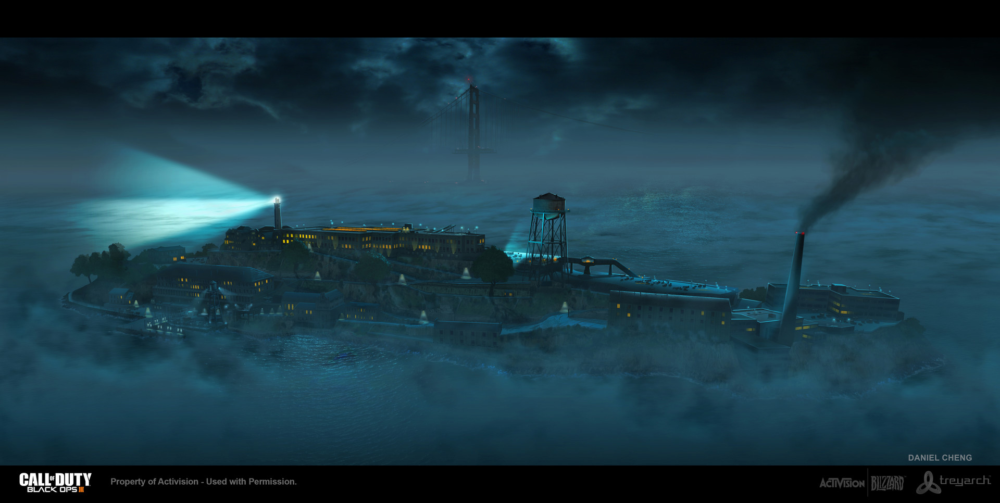
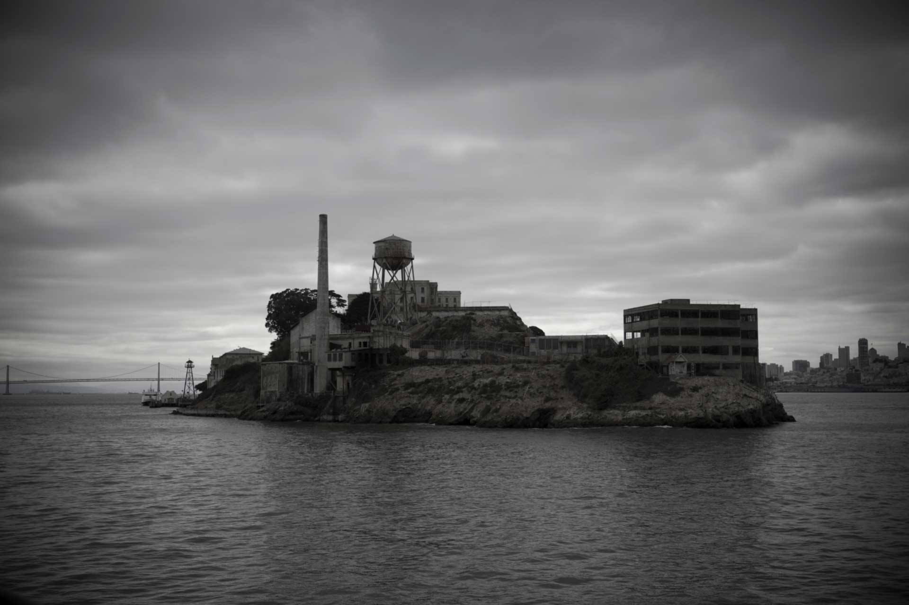

Alcatraz is an amazing place! It's one of the most toughest prisons to escape in the world. It's a maximun security prison for the worst of the worst and the hardest of the hardest prisoners in the world. It's 1.4 miles from shore and the water ranges from 44-55 degrees Fahrenheit. However inmates say that its actually a good prison. The cells only had one person in them which lowers the risk of violence. The guards were also respectful to the prisoners and they were respectful to the guard as well. The food was also better than the federal prisons too. There was also one escape that took months of planning and was maybe successful but it's not confirmed of a failed or success escape. The prison has also been featured in many games and movies and is a national landmark that I hope to visit someday.
Source Cited